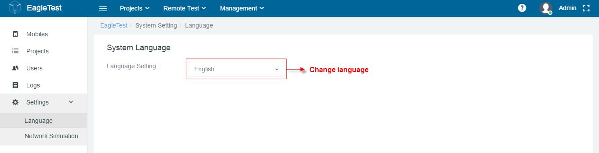
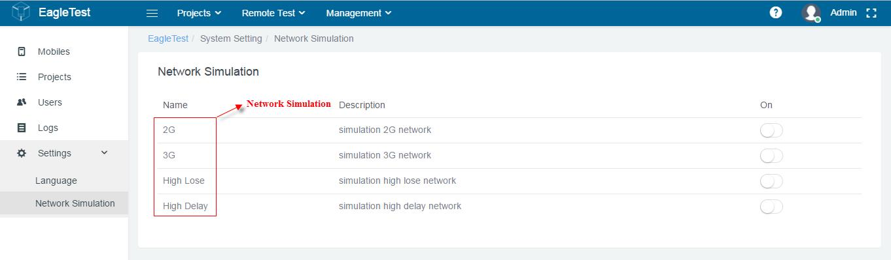

1.3.6 Setting
This Setting function provides the user to set the global configuration of the system operation, including language settings and so on.

Setting page for language
An administrator can configure and manage network simulation environment. The network provides a test scene for testing, as shown below.

Setting page for Network Simulation